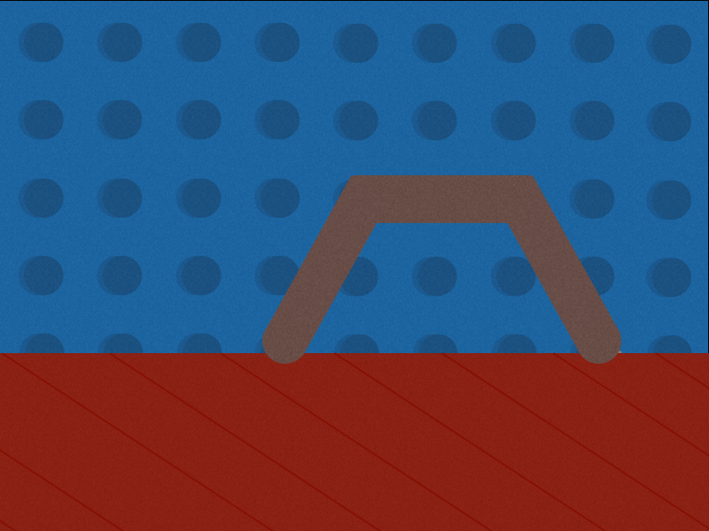

<!doctype html>
<html>
    
    <head>
        <title>TedLab - Word Learning Experiment</title>
        <script src="/static/lib/jquery-min.js" type="text/javascript"></script>
        <script src="/static/lib/underscore-min.js" type="text/javascript"></script>
        <script src="/static/lib/backbone-min.js" type="text/javascript"></script>
        
        <script src="/static/js/jsPsych/jspsych.js" type="text/javascript"></script>
        <script src="/static/js/jsPsych/plugins/jspsych-text.js" type="text/javascript"></script>
        <script src="/static/js/jsPsych/plugins/jspsych-single-stim.js" type="text/javascript"></script>
        <script src="/static/js/jsPsych/plugins/jspsych-call-function.js" type="text/javascript"></script>
        <script src="/static/js/jsPsych/plugins/jspsych-survey-text.js" type="text/javascript"></script>
        
        <script type="text/javascript">
            // These fields provided by the psiTurk Server
            var uniqueId = "{{ uniqueId }}"; // a unique string identifying the worker/task
            var adServerLoc = "{{ adServerLoc }}"; // the location of your ad (so you can send user back at end of experiment)
            var mode = "{{ mode }}"; // is this running live, sandbox, or in debug mode?
        </script>
        
        <!-- utils.js and psiturk.js provide the basic psiturk functionality -->
        <script src="/static/js/utils.js" type="text/javascript"></script>
        <script src="/static/js/psiturk.js" type="text/javascript"></script>
        
        <link href="/static/css/jspsych.css" rel="stylesheet" type="text/css"></link>
    </head>
    
    <body>
        <div id='jspsych-target'></div>
    </body>
    <script>

        /*NOTE!  See below in Welcome Block for a place to make notes about version...*/

        /* Useful fns*/

        function shuffle(array) {
            var currentIndex = array.length, temporaryValue, randomIndex ;

            // While there remain elements to shuffle...
            while (0 !== currentIndex) {

                // Pick a remaining element...
                randomIndex = Math.floor(Math.random() * currentIndex);
                currentIndex -= 1;

                // And swap it with the current element.
                temporaryValue = array[currentIndex];
                array[currentIndex] = array[randomIndex];
                array[randomIndex] = temporaryValue;
            }

            return array;
        };

        /**/
        /* PRELIMINARIES */
        /**/
        /* SETTING UP CONDITION OBJECT */
        /**/

        var myFlip = Math.round(Math.random());

        if (myFlip){
            var ConditionInfo = {
                name1: "Verb",
                name2: "Noun",
                instructiontext1: "your job is to think about the actions that the animals that live on this planet can do. There are different names for different kinds of actions. The alien ambassador will show you one movie of 'Daxing', and then several more movies. Your job is to figure out which animals are daxing. ",
                instructiontext2: "you will think about the different <b>species</b> of animals that live on this planet. Different species of animals do different kinds of actions. The alien ambassador will show you one movie of a Blick, and then several more movies. Your job is to figure out which animals are the the blicks. ",
                langexposure1: "daxing",
                langexposure2: "a blick"

            }

        } else {
            var ConditionInfo = {
                name1: "Noun",
                name2:"Verb",
                instructiontext1: "your job is to think about the different species of animals that live on this planet. Different species of animals do different kinds of actions. The alien ambassador will show you one movie of a Dax, and then several more movies. Your job is to figure out which animals are the daxes. ",
                instructiontext2: "you will think about the <b>actions</b> that animals living on this planet can do. There are different names for different kinds of actions. The alien ambassador will show you one movie of 'Blicking', and then several more movies. Your job is to figure out which animals are blicking. ",
                langexposure1: "a dax",
                langexposure2: "blicking"

            }

        };

        /* SET UP STIMULI FOR THIS PARTICIPANT */
        var listManners = ['vibrate','rotate','halfrotate','rock','sine','bounce','loop','stopstart','squarewave','backforth','zip','wheelie'];
        var listPaths = ['past','above','under','to','behind','tofar','along','underup','over','circle','onto','underfar'];

        listManners = shuffle(listManners);
        listPaths = shuffle(listPaths);

        ConditionInfo.baseManner1 = listManners[0];
        ConditionInfo.basePath1 = listPaths[0];
        ConditionInfo.baseMovie1 = '1_'+listManners[0]+'_'+listPaths[0];

        ConditionInfo.baseManner2 = listManners[1];
        ConditionInfo.basePath2 = listPaths[1];
        ConditionInfo.baseMovie2 = '1_'+listManners[1]+'_'+listPaths[1];

        //Use the next 3 manners for mannerChange stim  in each list   
        ConditionInfo.testMovie1 = [];
        ConditionInfo.testType1 = [];
        ConditionInfo.testMovie2 = [];
        ConditionInfo.testType2 = [];
        for (i = 1; i < 4; i++) { 
            ConditionInfo.testType1.push('MannerChange')
            ConditionInfo.testMovie1.push('1_'+ listManners[2*i]+'_'+listPaths[0])
            ConditionInfo.testType2.push('MannerChange')
            ConditionInfo.testMovie2.push('1_'+ listManners[2*i+1]+'_'+listPaths[1])
        };

        //the next 3 paths for pathChange stim in each list
        for (i = 1; i < 4; i++) { 
            ConditionInfo.testType1.push('PathChange')
            ConditionInfo.testMovie1.push('1_'+ listManners[0]+'_'+listPaths[2*i])
            ConditionInfo.testType2.push('PathChange')
            ConditionInfo.testMovie2.push('1_'+ listManners[1]+'_'+listPaths[2*i+1])
        };

        //And the next 2 of both for double-change stim!
        for (i=4; i<6; i++){
            ConditionInfo.testType1.push('BothChange')
            ConditionInfo.testMovie1.push('1_' + listManners[2*i]+'_'+listPaths[2*i])
            ConditionInfo.testType2.push('BothChange')
            ConditionInfo.testMovie2.push('1_' + listManners[2*i+1]+'_'+listPaths[2*i+1])
        };

        //And 2 copies of the 'same' movie!
        for (i=1; i<4 ; i++){
            ConditionInfo.testType1.push('NoChange')
            ConditionInfo.testMovie1.push('1_' + listManners[0]+'_'+listPaths[0])
            ConditionInfo.testType2.push('NoChange')
            ConditionInfo.testMovie2.push('1_' + listManners[1]+'_'+listPaths[1])
        };

        /**/
        /* DONE SETTING CONDTIONS/STIM */
        /**/


        var movieHtml = '<h3>Watch the movie below:</h3><br></br><div>'+
                '<video id="TheMovie" width="400" height="300" preload autoplay>'+
                '<source id="src_mpg" src="static/movies/XXX.mp4"  type=\'video/mp4; codecs="avc1.42E01E, mp4a.40.2"\'>' +
                '<source id="src_ogv" src="static/movies/XXX.webm"  type=\'video/webm; codecs="vp8, vorbis"\'>'+ 
                '<source id="src_ogv" src="static/movies/XXX.ogv"  type=\'video/ogg; codecs="theora, vorbis"\'>' +
                '<p> Sorry! Your browser is not capable of displaying the videos for this experiment. Please return the HIT. </p>'+
                '</video>'+
                '</div>';


        /**/
        /* DEFINING PSITURK BLOCKS */
        /**/

        /* SET UP INSTRUCTION BLOCKS */

        /* load psiturk */
        var psiturk = new PsiTurk(uniqueId, adServerLoc, mode);

        /* text blocks - part 2 versions are interleaved! */

        var welcome_block = {
            type: "text",
            text: "Welcome to the Alien Animals experiment. Press the spacebar to continue.",
            data:{
                isTestTrial:0,
                expVersion: 'Exp2, within subjects, fixed'
            }
        };

        var instructions_block = {
            type: "text",
            text: function () {
                return "<p>In this experiment, you will be playing the part of an explorer on an alien planet.  " +
                "The alien ambassador is teaching you about the animals that live on this planet.  You are "+
                "interested in learning about the kinds of animals that live on this planet and what they can do.</p>"+
                "<p>Because of the thick atmosphere, you cannot observe the environment outside directly, but you "+
                "have an instrument that will show you a simple view of what is happening.</p>" +
                "<p>Animals are represented by a yellow triangle:</p>" +
                "<div class='center-content'></img></div>" + 
                "<p>You can also see a simple schematic of the scene outside:</p>" + 
                "<div class='center-content'></img></div>" + 
                "<br></br>" + 
                "<p> You will learn two different words today. For your first task, "+
                ConditionInfo.instructiontext1 +
                "<p>Press the spacebar to begin.</p>"
                },
            timing_post_trial: 500,
            data:{
                isTestTrial:0
            }
        };

        var instructions_block2 = {
            type: "text",
            text: function () {
                return "<p>Now, you will learn a second word from the alien ambassador.</p>" +
                "<br></br>" + 
                "<p> This time, "+
                ConditionInfo.instructiontext2 +
                "<p>Press the spacebar to begin.</p>"
                },
            timing_post_trial: 500,
            data:{
                isTestTrial:0
            }
        };

        /**/
        /* INITIAL MOVIE EXPOSURE BLOCK */
        /**/

        var exposure_block = {
            type: "single-stim",
            prompt: "<p>The alien ambassador says:</p><p><b> 'Look at this animal. It's " + ConditionInfo.langexposure1 + "'. </b></p><p>Press the space bar to continue.</p>",
            stimuli: movieHtml.replace('XXX', ConditionInfo.baseMovie1),
            is_html: true,
            choices: [' '], /* go on by hitting spacebar*/
            timing_post_trial: 500,
            data: {
                isTestTrial:0,
                exposure_manner: ConditionInfo.baseManner1,
                exposure_path: ConditionInfo.basePath1,
                condition_name: ConditionInfo.name1,
                }
        };

        var exposure_block2 = {
            type: "single-stim",
            prompt: "<p>The alien ambassador says:</p><p><b> 'Look at this animal. It's " + ConditionInfo.langexposure2 + "'. </b></p><p>Press the space bar to continue.</p>",
            stimuli: movieHtml.replace('XXX', ConditionInfo.baseMovie2),
            is_html: true,
            choices: [' '], /* go on by hitting spacebar*/
            timing_post_trial: 500,
            data: {
                isTestTrial:0,
                exposure_manner: ConditionInfo.baseManner2,
                exposure_path: ConditionInfo.basePath2,
                condition_name: ConditionInfo.name2,
                }
        };

        /**/
        /* INSTRUCTIONS BEFORE TEST */
        /**/

        var pretest_instructions_block = {
            type: "text",
            text: function () {
                return "<p>Now you will see some more movies. </p>"+
                "<p> Each time, the alien ambassador will ask you: </p>"+
                "<p><b> Is this " + ConditionInfo.langexposure1 + "?</b></p>"+
                "<p>You will give a rating for your answer on a scale of 1 to 7.</p>"+
                "<p>A rating of 1 means 'definitely NOT " +ConditionInfo.langexposure1 +
                "' and a rating of 7 means 'definitely " + ConditionInfo.langexposure1 + "'.</p>" +
                "<br></br>" + 
                "<p>Press any key when you are ready to begin.</p>"
                },
            timing_post_trial: 500,
            data:{
                isTestTrial:0
            }
        };

        var pretest_instructions_block2 = {
            type: "text",
            text: function () {
                return "<p>Now you will see some more movies. </p>"+
                "<p> Each time, the alien ambassador will ask you: </p>"+
                "<p><b> Is this " + ConditionInfo.langexposure2 + "?</b></p>"+
                "<p>You will give a rating for your answer on a scale of 1 to 7.</p>"+
                "<p>A rating of 1 means 'definitely NOT " +ConditionInfo.langexposure2 +
                "' and a rating of 7 means 'definitely " + ConditionInfo.langexposure2 + "'.</p>" +
                "<br></br>" + 
                "<p>Press any key when you are ready to begin.</p>"
                },
            timing_post_trial: 500,
            data:{
                isTestTrial:0
            }
        };

        /**/
        /* MAIN TEST - 1 INSTANCES OF ALL 20 MOVIES */
        /**/

        //Wrap & randomize stimuli

        var TestInfo1 = [];
        TestInfo1.dataObj = [];
        for (i=0;i<10;i++){
            TestInfo1.dataObj.push({
                    isTestTrial:1,
                    stimCondition:ConditionInfo.testType1[i],
                    stimName:ConditionInfo.testMovie1[i],
                    exposure_manner: ConditionInfo.baseManner1,
                    exposure_path: ConditionInfo.basePath1,
                    condition_name: ConditionInfo.name1,
                })
            
        }
        TestInfo1.testHTML = [];
        for (i=0;i<10;i++){
            TestInfo1.testHTML.push(movieHtml.replace('XXX',ConditionInfo.testMovie1[i]))
            
        }

        var TestInfo2 = [];
        TestInfo2.dataObj = [];
        for (i=0;i<10;i++){
            TestInfo2.dataObj.push({
                    isTestTrial:1,
                    stimCondition:ConditionInfo.testType2[i],
                    stimName:ConditionInfo.testMovie2[i],
                    exposure_manner: ConditionInfo.baseManner2,
                    exposure_path: ConditionInfo.basePath2,
                    condition_name: ConditionInfo.name2,
                })
            
        }
        TestInfo2.testHTML = [];
        for (i=0;i<10;i++){
            TestInfo2.testHTML.push(movieHtml.replace('XXX',ConditionInfo.testMovie2[i]))
            
        }

           
        /* Define test block  */


        var test_block = {
            type: "single-stim",
            prompt: "The alien ambassador says:" + "<p><b> Look at this animal. Is it " + ConditionInfo.langexposure1 + "?</b></p>"+ "<p> Give a rating of 1 to 7 using your keyboard. </p>" +
                "<p>A rating of 1 means 'definitely NOT " +ConditionInfo.langexposure1 +
                "' and a rating of 7 means 'definitely " + ConditionInfo.langexposure1 + "'.</p>",
            stimuli: TestInfo1.testHTML,
            is_html:true,
            choices: ['1','2','3','4','5','6','7'],
            randomize_order: true,
            timing_post_trial: 500,
            data: TestInfo1.dataObj
        };

        var test_block2 = {
            type: "single-stim",
            prompt: "The alien ambassador says:" + "<p><b> Look at this animal. Is it " + ConditionInfo.langexposure2 + "?</b></p>"+ "<p> Give a rating of 1 to 7 using your keyboard. </p>" +
                "<p>A rating of 1 means 'definitely NOT " +ConditionInfo.langexposure2 +
                "' and a rating of 7 means 'definitely " + ConditionInfo.langexposure2 + "'.</p>",
            stimuli: TestInfo2.testHTML,
            is_html:true,
            choices: ['1','2','3','4','5','6','7'],
            randomize_order: true,
            timing_post_trial: 500,
            data: TestInfo2.dataObj
        };

        /* new!  Also define a test block that just gives the match item! */

        var first_test_block = {
            type: "single-stim",
            prompt: "The alien ambassador says:" + "<p><b> Look at this animal. Is it " + ConditionInfo.langexposure1 + "?</b></p>"+ "<p> Give a rating of 1 to 7 using your keyboard. </p>" +
                "<p>A rating of 1 means 'definitely NOT " +ConditionInfo.langexposure1 +
                "' and a rating of 7 means 'definitely " + ConditionInfo.langexposure1 + "'.</p>",
            stimuli: movieHtml.replace('XXX', ConditionInfo.baseMovie1),
            is_html:true,
            choices: ['1','2','3','4','5','6','7'],
            timing_post_trial: 500,
            data: {
                isTestTrial:1,
                stimCondition: 'NoChange',
                stimName: ConditionInfo.baseMovie1,
                exposure_manner: ConditionInfo.baseManner1,
                exposure_path: ConditionInfo.basePath1,
                condition_name: ConditionInfo.name1,
            }
        };

        var first_test_block2 = {
            type: "single-stim",
            prompt: "The alien ambassador says:" + "<p><b> Look at this animal. Is it " + ConditionInfo.langexposure2 + "?</b></p>"+ "<p> Give a rating of 1 to 7 using your keyboard. </p>" +
                "<p>A rating of 1 means 'definitely NOT " +ConditionInfo.langexposure2 +
                "' and a rating of 7 means 'definitely " + ConditionInfo.langexposure2 + "'.</p>",
            stimuli: movieHtml.replace('XXX', ConditionInfo.baseMovie2),
            is_html:true,
            choices: ['1','2','3','4','5','6','7'],
            timing_post_trial: 500,
            data: {
                isTestTrial:1,
                stimCondition: 'NoChange',
                stimName: ConditionInfo.baseMovie2,
                exposure_manner: ConditionInfo.baseManner2,
                exposure_path: ConditionInfo.basePath2,
                condition_name: ConditionInfo.name2,
            }
        };

        var posttest_block = {
            type: "single-stim",
            prompt: "<p>Just to check, what was the word you were learning in this last section?</p>"+
            "<p>1 - Blicking<p/>"+
            "<p>2 - a Dax<p/>"+
            "<p>3 - a Blick <p/>"+
            "<p>4 - Daxing<p/>",
            stimuli: "static/images/white.jpg",
            is_html:false,
            choices: ['1','2','3','4'],
            timing_post_trial: 500,
            data: {
                isTestTrial:0,
            }

        }


        /**/
        /* DEBRIEF BLOCK */
        /**/

        var feedback_block = {
            type: 'survey-text',
            questions: [["<p> In this study, we are interested in how people learn different kinds of categories. You learned about a category of 'daxing' or 'blicking' (a verb), and a category of 'daxes' or 'blicks' (a noun).  We are interested in the similarities and differences in the categories that people learn under these conditions. This will help us to understand how language influences the way we think and learn in new situations. </p> <p>Do you have any feedback about the task, or comments on how you thought about the answers you gave?  In your own words, what do the words you learned mean? Enter your comments below.</p>"]],
            data:{
                isTestTrial:0
            }
        };

        var debrief_block = {
            type: "text",
            text: function() {
                return "<p>Thank you for participating in the experiment!</p>" +
                "<p> To submit this HIT, press any key on your keyboard to return to the Mechanical Turk interface, and then press the 'submit' button. </p>";
            },
            data:{
                isTestTrial:0
            }
        };


        /**/
        /* DEFINING EXPERIMENT STRUCTURE AND INITIALIZING */
        /**/


        /* define experiment structure */

        var experiment_blocks = [];

        experiment_blocks.push(welcome_block);

        experiment_blocks.push(instructions_block);

        experiment_blocks.push(exposure_block);

        experiment_blocks.push(pretest_instructions_block);

        experiment_blocks.push(first_test_block);

        experiment_blocks.push(test_block);

        experiment_blocks.push(posttest_block);

        experiment_blocks.push(instructions_block2);

        experiment_blocks.push(exposure_block2);

        experiment_blocks.push(pretest_instructions_block2);

        experiment_blocks.push(first_test_block2);

        experiment_blocks.push(test_block2);
        
        experiment_blocks.push(posttest_block);

        experiment_blocks.push(feedback_block);

        experiment_blocks.push(debrief_block);


        /* start the experiment */

        jsPsych.init({
            display_element: $('#jspsych-target'),
            experiment_structure: experiment_blocks,
            on_finish: function() {
                psiturk.saveData({
                    success: function() { psiturk.completeHIT(); }
                });
            },
            on_data_update: function(data) {
                psiturk.recordTrialData(data);
                psiturk.saveData();
            }
        });
    </script>

</html>
